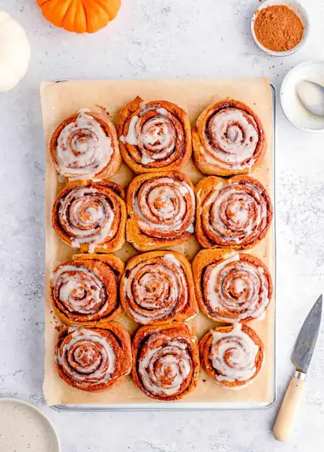

Healthy Cinnamon Rolls

Ingredients
- ½ cup unsweetened almond milk or lowfat milk, warm (118 ml)
- ¼ cup brown sugar (unpacked) or coconut sugar (can also use powdered stevia (55 grams)
- 2 tsp instant yeast (1 package)
- ¼ cup vegetable oil (Use any vegetable oil like sunflower, coconut oil or canola/rapeseed oil) )
- 1 egg
- 1 tsp vanilla bean paste or vanilla extract
- ½ cup pure pumpkin puree (110 grams)
- 3½ cups whole wheat bread flour, sifted, divided (440 grams) Note - you'll need more for hands and work surface)
- 1 tsp ground cinnamon
- 1 tsp ground nutmeg
- ¼ cup butter, softened at room temperature (60 grams)
- ½ cup coconut sugar or brown sugar, unpacked (can also use powdered stevia (100 grams)
- 1 tbsp cinnamon
- 1 tsp pumpkin pie spice (optional)
- 2 tbsp raisins, dried cherries, walnuts, pecans, or dried cranberries (optional)
- 2 tbsp unsweetened almond milk or lowfat milk
- ¼ cup powdered sugar (30 grams)
- 1 tsp vanilla bean paste
Steps
- In a small bowl add warm milk, sugar and sprinkle the yeast on top. Let it rise for 5minutes.
- In a large mixing bowl combine the oil, egg, vanilla, pumpkin puree and mix until smooth and well combined.
- Pour in the milk with yeast and stir until combined.
- Add the flour and spices and stir until incorporated.
- Knead by hand or using a mixer for 3-5 minutes until you have an elastic and smooth dough.
- Form into a ball and transfer to a lightly greased bowl. Cover with a kitchen towel and let it rise for 1 - 2 hours until doubled in size.
- Transfer the dough onto a floured surface. With the help of a rolling pin, roll out the dough until you have a 14×16-inch rectangle.
- Spread the butter on top and sprinkle with sugar, cinnamon and pumpkin spice. Roll the dough into a log and with a knife cut out 12 rolls.
- Place the rolls into a 9x13 inch baking pan and cover again. Let them rise for 30 minutes, then preheat your oven to 350 degrees.
- Take the rolls to the oven and bake for 20-30 minutes until golden brown on top.
- To make the glaze, mix the icing sugar with milk and vanilla. Top the cinnamon roll with glaze and enjoy!
Recipe by Anjali Shah · The Picky Eater, from The Picky Eater. Saved here for personal use; the original has the full notes, tips and photos. Open original